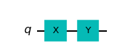

5. One-qubit gates#
In quantum computing, we manipulate the state of qubits by applying a series of gates on qubits. In this chapter, I introduce various one-qubit gates commonly used in quantum computing. When a one-qubit gate acts on a single qubit, the Bloch vector of the qubit rotates around a certain axis by a certain angle. The most general rotation is Euler rotation, which is done by \(U\) gate. In theory, we need only this gate. However, it is not convenient since we have to figure out three parameters (angles) for each operation. Furthermore, in actual quantum computing devices, the general gate may not be available. In practice, we use parameter-free gates with predefined rotation axes and angles, and a few others that require a single parameter.
Mathematically, the gates are unitary operators in \(\mathbb{C}^2\). Some are Hermitian and others are not. Table 5.1 lists commonly used single-qubit gates. I explain some the most important ones in the following section. See also Qiskit documentation:
Generaic Name |
Qiskit Ciruit Name |
# of Parameters |
Symbols |
|---|---|---|---|
Unitary |
u |
3 |
\(U\) |
Rotation X |
rx |
1 |
\(R_x\) |
Rotation Y |
ry |
1 |
\(R_y\) |
Rotation Z |
rz |
1 |
\(R_z\) |
Pauli X |
x |
0 |
\(X\) |
Pauli Y |
y |
0 |
\(Y\) |
Pauli Z |
z |
0 |
\(Z\) |
Hadamard |
h |
0 |
\(H\) |
Sqrt X |
sx |
0 |
\(SX\) |
Inverse sqrt X |
sxdg |
0 |
\(SX^\dagger\) |
Sqrt Z |
s |
0 |
\(S\) |
Inverse sqrt Z |
sdg |
0 |
\(S^\dagger\) |
4th root Z |
t |
0 |
\(T\) |
Inverse 4th root Z |
tdg |
0 |
\(T^\dagger\) |
Phase |
p |
1 |
\(P\) |
5.1. Mathematical expressions#
In the following sections, the definition and properties of each gate is explained. There are several ways to define the gates. In the following sections, the gates are defined in four different ways but they are mathematically all equivalent. In this lecture, each gate is expressed with the following forms. Using complex coefficients \(c_{ij}\), a gate \(A\) is defines as
Transformation of basis vectors
\(A|0\rangle = c_{00} |0\rangle + c_{10}|1\rangle\) and \(A|1\rangle = c_{01}|0\rangle + c_{11}|1\rangle\)Operator expression with dyads (useful for theoretical investigation)
\(A = c_{00} |0\rangle\langle 0| + c_{01} |0\rangle\langle 1| + c_{10} |1\rangle\langle 0| + c_{11} |1\rangle\langle 1|\)Matrix expression
\(A = \begin{bmatrix}c_{00} & c_{01} \\ c_{10} & c_{11}\end{bmatrix}\)
which are all equivalent.
5.2. Universal Gate#
Every single qubit can be expressed with universal gate \(U(\theta,\phi,\lambda)\) by specifying the value of parameters \(\theta\), \(\phi\), and \(\lambda\). Hence, any single qubit can be defined with the \(U\) gate. Why do we need many different gates when they can be all expressed with a single \(U\) gate? In fact, a common algorithm of quantum machine learning uses only the \(U\) gate and \(CX\) gate and determine the parameter values by mahine learning methods. However, it is easier to understand a circuit if it is written with a set of parameter-free gates since the meaning of the gates are clear.
5.3. Transformation of general superposition states#
The definitions do not give you a clear idea on the operational functionality of a gate. It is important to understand how a superposition state is transformed by the gate. Pay attention to how the coefficients are transformed.
5.4. Combination of gates#
When gate \(Y\) is applied after \(X\), we write it \(Y \cdot X\). We can think of a gate \((Y \cdot X)\) acts on a state vector as
We put “\(\cdot\)” between the gates to avoid confusion. For example \(SX\) is a single gate and \(S \cdot X\) is a product of \(S\) and \(X\).
The order is important. \(Y \cdot X\) is not necessarily equal to \(X \cdot Y\).
In quantum circuit, the gates act from left to right. For example, \(Y\cdot X |0\rangle\) becomes

Last modified: 08/31/2022